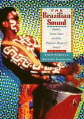

An encyclopedia survey of Brazilian popular music
An encyclopedia survey of Brazilian popular music


 An encyclopedia survey of Brazilian popular music
An encyclopedia survey of Brazilian popular music

|  |
The Brazilian SoundSamba, Bossa Nova, and the Popular Music of BrazilNew EditionChris McGowan and Ricardo Pessanhapaper EAN: 978-1-56639-545-8 (ISBN: 1-56639-545-3) |
"This book, the first of its kind, is much more than a pioneering work...The Brazilian Sound is both an enthusiastic introduction for the newcomer and a thoughtful analysis for the confirmed fan."
—Alan Ryan, The Beat
At the second International Song Festival in 1967, Milton Nascimento had three songs accepted for competition. He had no intention of performing them—he hated the idea of intense competition. In fact, Nascimento might never have appeared at all if Eumir Deodato hadn't threatened not to write the arrangements for his songs if he didn't perform at least two of them. Nascimento went on to win the festival's best performer award, all three of his songs were included soon afterward on his first album, and the rest is history.
This is only one anecdote from The Brazilian Sound, an encyclopedic survey of Brazilian popular music that ranges over samba, bossa nova, MPB, jazz and instrumental music and tropical rock, as well as the music of the Northeast. The authors have interviewed a wide variety of performers like Nascimento, Gilberto Gil, Carlinhos Brown, and Airto Moreira, U.S. fans, like Lyle Mays, George Duke, and Paul Winter, executive André Midani; and music historian Zuza Homem de Mello, just to name a few.
First published in 1991, The Brazilian Sound received enthusiastic attention both in the United States and abroad. For this new edition, the authors have expanded their examination of the historical roots of Brazilian music, added new photographs, amplified their discussion of social issues like racism, updated the maps, and added a new final chapter highlighting the most recent trends in Brazilian music. The authors have expanded their coverage of the axé music movement and included profiles of significant emerging artists like Marisa Monte, Chico Cesar, and Daniela Mercury.
Clearly written and lavishly illustrated with 167 photographs, The Brazilian Sound is packed with facts, explanations, and fascinating stories. For the Latin music aficionado or the novice who wants to learn more, the book also provides a glossary, a bibliography, and an extensive discography containing 1,000 entries.
Excerpt available at www.temple.edu/tempress
"An informed, useful introduction to Brazilian music."
—Fernando Gonzalez, Boston Globe
"A great panoramic description of the whole Brazilian musical scene."
—Antonio Adolfo, Brazilian composer and music teacher
"An excellent book."
—Don Heckman, Los Angeles Times
Preface
Acknowledgments
Introduction
1. Five Centuries of Music
2. Samba: The Heartbeat of Rio
3. Bossa Nova: The New Way
4. MPB: A Musical Rainbow
5. Minas Gerais: Musical Treasures
6. Bahia of All the Saints
7. North by Northeast
8. Brazilian Instrumental Music and Jazz
9. Tropical Rock
10. More Brazilian Sounds
Glossary
Select Bibliography
Select Discography
Index
Chris McGowan was a contributing writer and columnist for Billboard from 1984 to 1996 and pioneered that publication's coverage of Brazilian and world music in the mid-1980s. He has written about the arts and other subjects for Musician, The Beat, the Hollywood Reporter, the Los Angeles Times, L. A Weekly, and the Los Angeles Reader. He is the author of Entertainment in the Cyber Zone: Exploring the Interactive Universe of Multimedia (1995) and was a contributor to The Encyclopedia of Latin American History and Culture (1996).
Ricardo Pessanha has worked as a teacher, writer, editor, and management executive for CCAA, one of Brazil's leading institutes of English-language education. He has served as a consultant to foreign journalists and scholars on numerous cultural projects relating to Brazil. He has contributed articles about Brazilian music to The Beat and other publications.
Latin American/Caribbean Studies
Sociology
Music and Dance
© 2015 Temple University. All Rights Reserved. This page: http://www.temple.edu/tempress/titles/1318_reg.html.